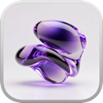

SUPERISLAND / KEEP AWAKE
开盖后的任务回顾
开盖回顾 · 可交互需求稿 v0.1

SuperIsland
本次合盖回顾
本次任务
本次时间线
统计说明
合盖时长：本次关盖到开盖的时间。
保持运行时长：合盖期间，本功能实际保持生效的时段。多任务同时运行只计一次，不代表 CPU 工作时长。
任务数量：按独立任务去重，工具调用不单独计数。明确的后台检查另列；类型不明的记录会注明。
已确认休眠：有实际睡眠记录才这样显示。只有请求受理，显示“休眠尚未确认”。
合盖中 · 演示
使用右侧“模拟开盖并解锁”查看本次回顾。